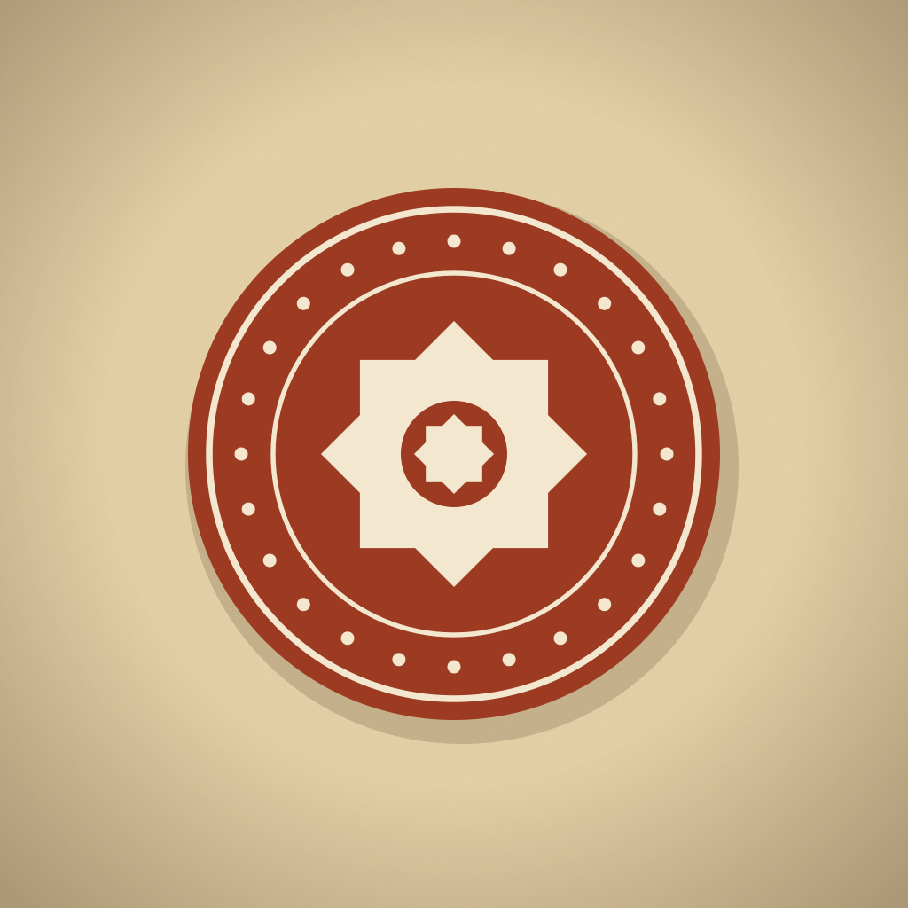
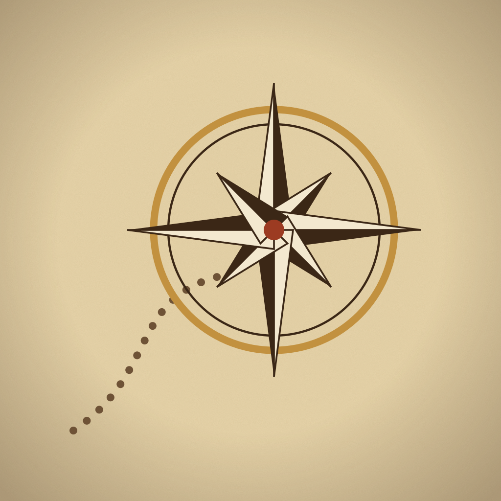
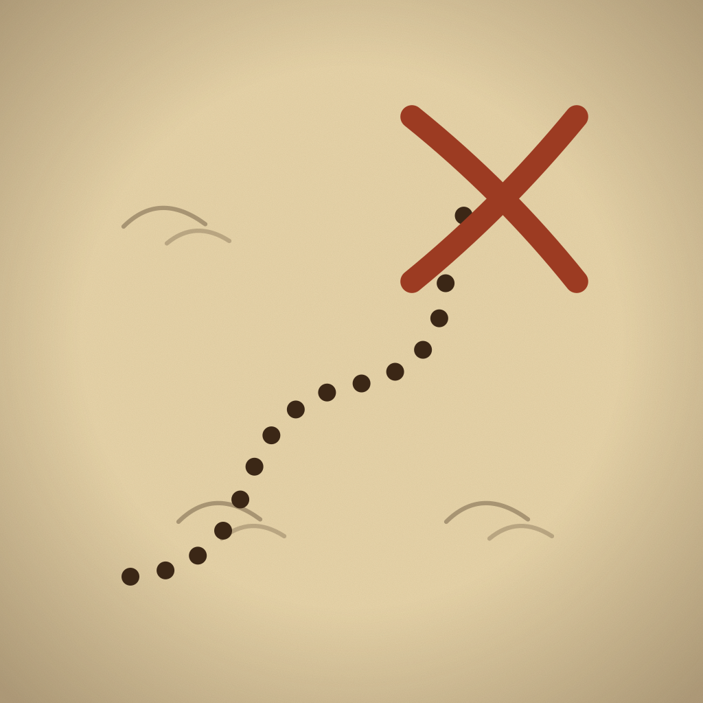
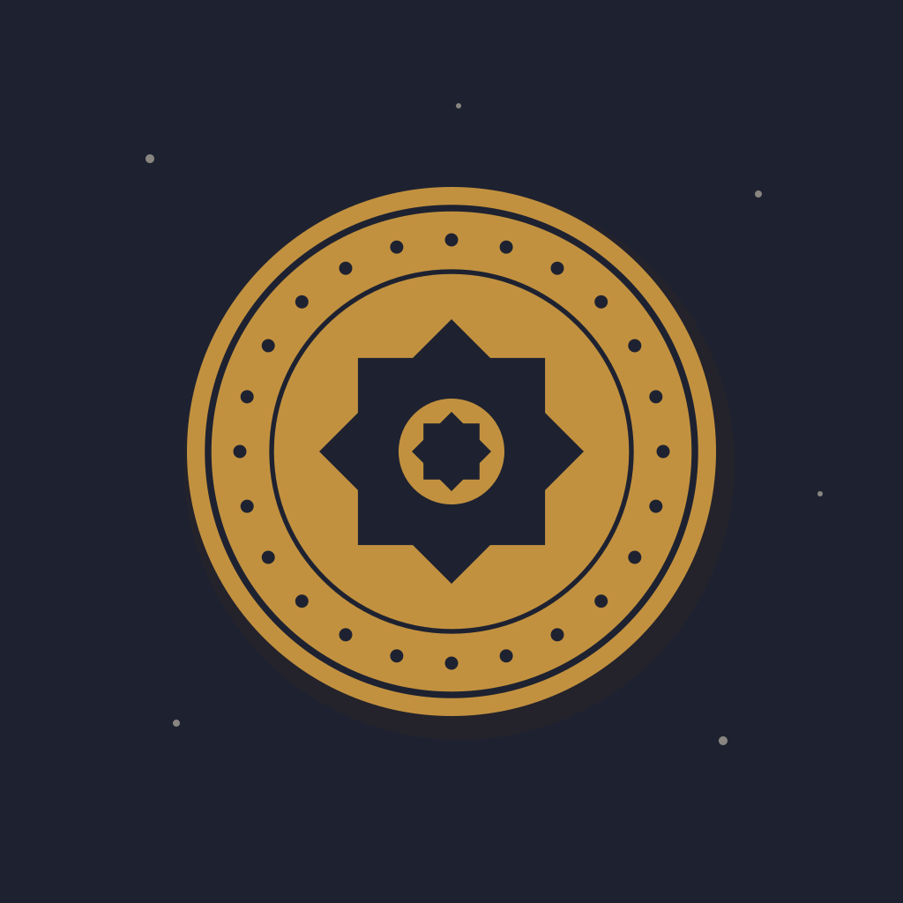
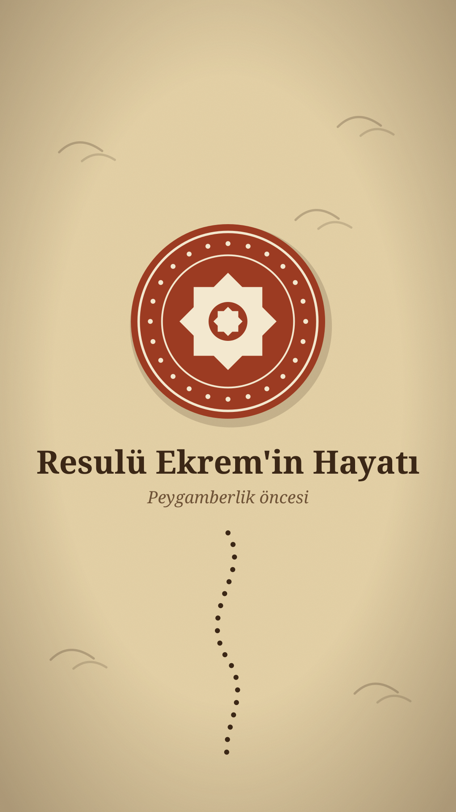
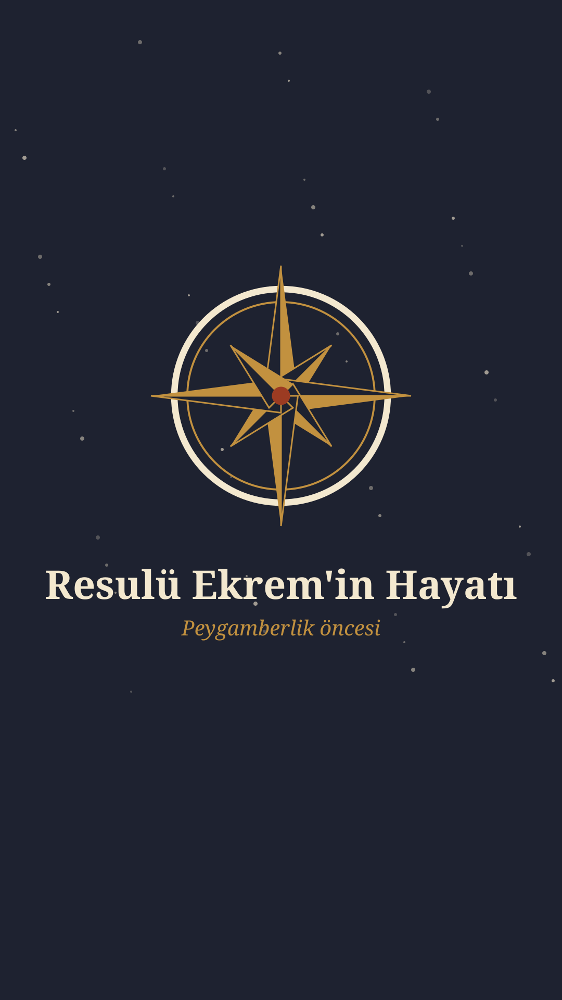
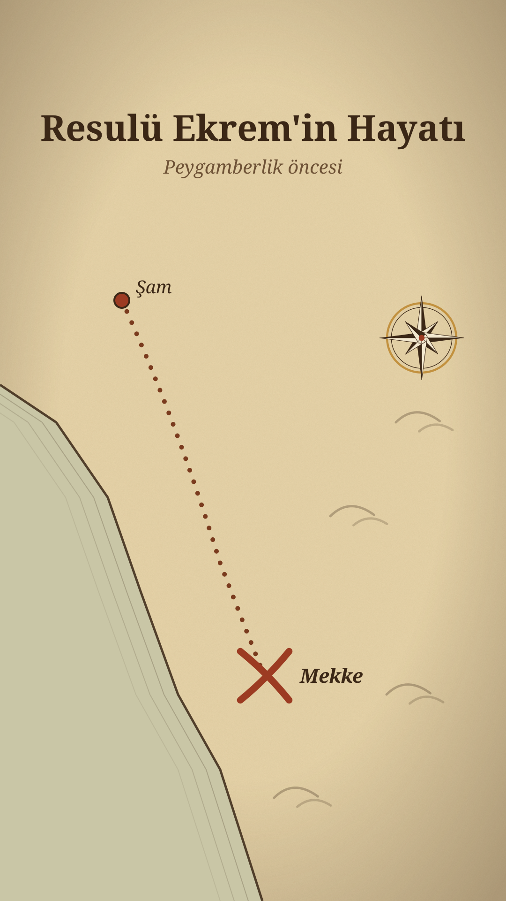

Renkler uygulamanın paletinden (app/lib/tema.dart). Simgeler Android maskeleriyle ve gerçek
boyutunda (48 px) gösterilir. Kaynaklar SVG; python tasarim/simge-acilis/uret.py ile yeniden üretilir.
simge-1-muhur.svg
Ana sayfadaki numara mührünün büyüğü: kına kırmızısı, çift halka, ortada sekiz köşeli yıldız. Küçük boyutta en okunaklı olan; uygulamanın 'damga' dilini taşır.
simge-2-pusula.svg
Haritadaki pusula gülü, altın halkayla. Yolculuk ve harita fikrini verir; dinî bir sembol taşımaz.
simge-3-yol.svg
Ana sayfanın kendisi: kıvrılan noktalı yol ve hedefte kına kırmızısı çarpı. Uygulamanın 'yolculuk' anlatısına en yakın olanı; küçük boyutta noktalar silikleşebilir.
simge-4-gece-muhur.svg
Mührün koyu sürümü: gece laciverdi zemin, altın mühür. Telefonun karanlık temasında ve parlak simgelerin arasında öne çıkar.
acilis-1-parsomen.svg
Uygulamanın kendi zemini: parşömen, ortada mühür, altta başlık ve aşağı inen noktalı yol (ana sayfaya geçişi müjdeler). Uygulamaya en tutarlı geçiş.
acilis-2-gece.svg
Gece laciverdi zemin, seyrek yıldızlar, altın pusula ve parşömen renginde başlık. Hira'daki gecelere ve 'yolculuğa çıkış'a gönderme; karanlık temalı telefonlarda göz almaz.
acilis-3-harita.svg
Haritanın kendisinden bir kesit: Kızıldeniz kıyısı, Şam'dan Mekke'ye inen kervan yolu ve Mekke'de çarpı; başlık üstte. Uygulamanın harita ve yolculuk özelliklerini tanıtır.